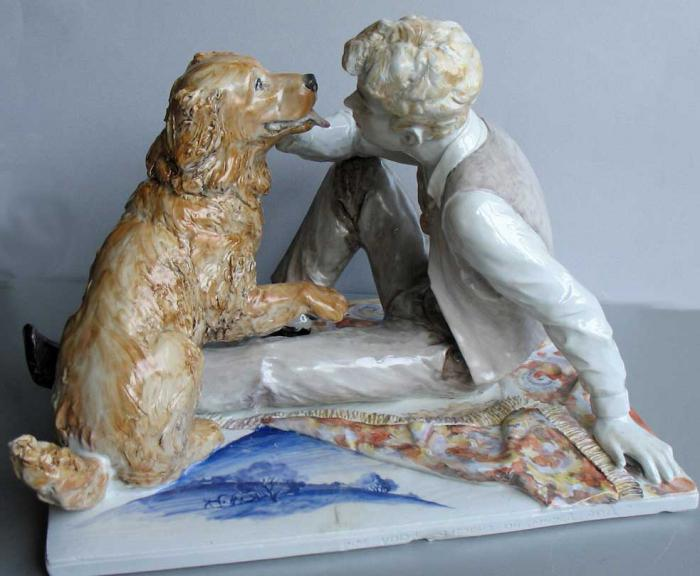

С.А. Есенин. Собаке Качалова

Дай, Джим, на счастье лапу мне,
Такую лапу не видал я сроду.
Давай с тобой полаем при луне
На тихую, бесшумную погоду.
Дай, Джим, на счастье лапу мне.
Пожалуйста, голубчик, не лижись.
Пойми со мной хоть самое простое.
Ведь ты не знаешь, что такое жизнь,
Не знаешь ты, что жить на свете стоит.
Хозяин твой и мил и знаменит,
И у него гостей бывает в доме много,
И каждый, улыбаясь, норовит
Тебя по шерсти бархатной потрогать.
Ты по-собачьи дьявольски красив,
С такою милою доверчивой приятцей.
И, никого ни капли не спросив,
Как пьяный друг, ты лезешь целоваться.
Мой милый Джим, среди твоих гостей
Так много всяких и невсяких было.
Но та, что всех безмолвней и грустней,
Сюда случайно вдруг не заходила?
Она придет, даю тебе поруку.
И без меня, в ее уставясь взгляд,
Ты за меня лизни ей нежно руку
За все, в чем был и не был виноват.